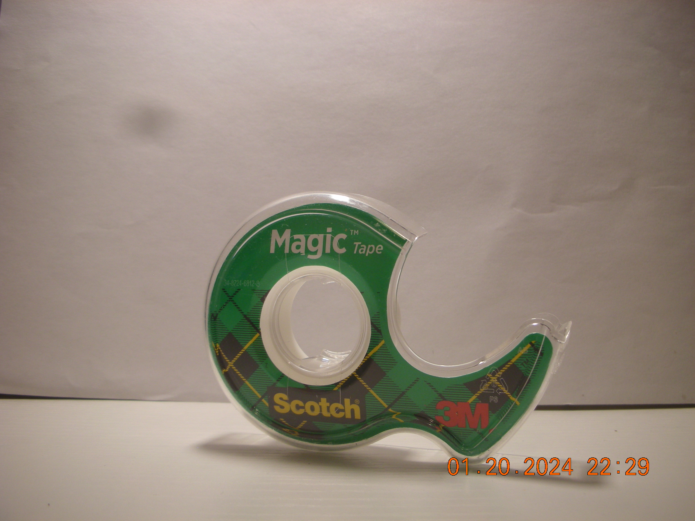
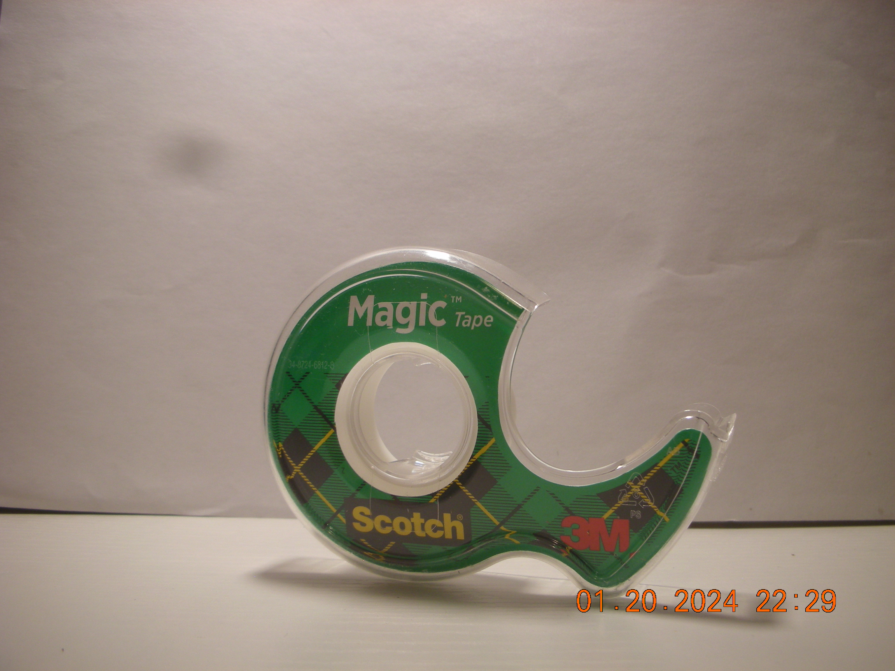
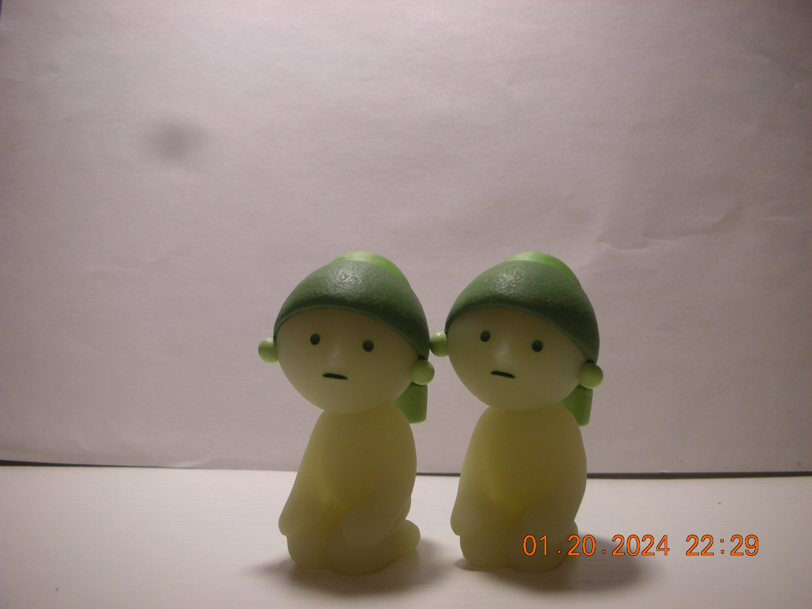
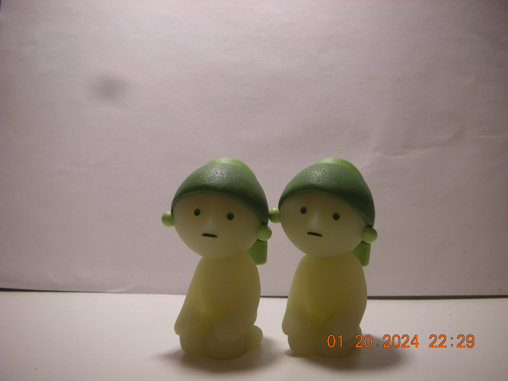
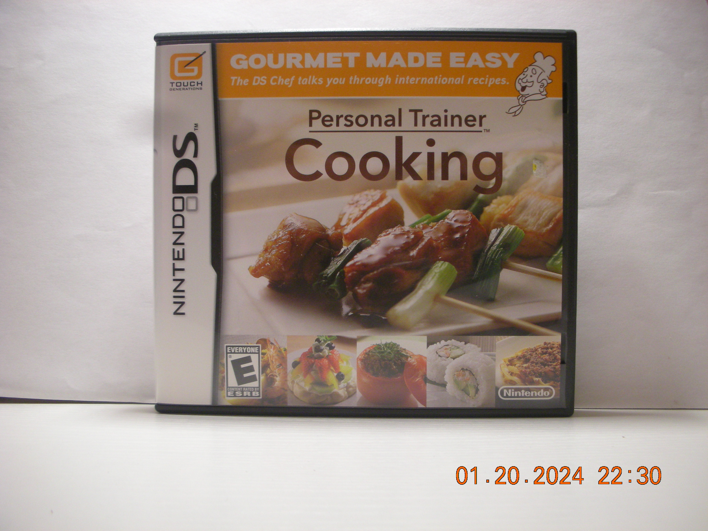
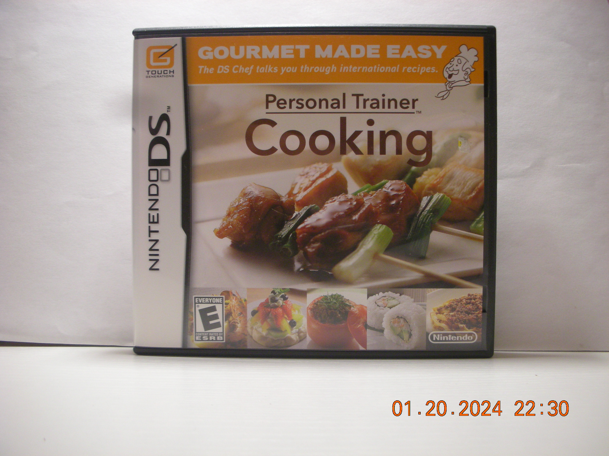

It is almost a default for humans with a camera to photograph what their eyes deem as beautiful. Nothing against sunsets, and flowers, and fresh morning dew on grass, but I find we have an overwhelming amount of these lush stock images. When was the last time you saw something truly boring, gross, needless, or maybe even … trashy! Yes! Trash! So often we document the natural gifts and beauties of the world, but what about the man-made trashes? This is why I set out to document some of my weekly trash items, because there truly is beauty in all things used, unneeded, and discardable. There is truly a beautiful story in trash!
I believe by looking at what we discard we can tell a lot about a person’s needs, interests, and priorities. Trash tells the more secretive stories of a one’s personal life, each item represents the difficult decision to let go. By documenting my trash, I become more aware and appreciative of the objects I use. Or I can become more aware and understanding of what I choose to let go of. Looking at your own trash offers an easy reflection into what we choose to consume, and choices are everything! Trash is everything! Let’s take a look at some of my choices this week.
This week marked a significant moment in used up goods. Seemingly many of my daily items ran out of their prescribed contents, forcing me to throw out their useless, empty, plastic shells. I also took some time to declutter my media shelf, getting rid of pieces designed for entertainment that I had previously been amused with, but now items I no longer feel entertained by. Lastly some items marked as refused, these pieces were either gifted to me or spontaneously bought, but ultimately discarded for specific reason.
 

This week in used items features an expensive brand of sunscreen I stole from my sister’s hoard of bougie skincare supplies. More like a sample than a product, this 0.5 fl. oz tube was used in about three weeks. It is small enough to fit in the palm of my hand, which is one of the reasons I decided to steal it in the first place. My fondest memory with this item was realizing my sister would never notice it was gone due to her immense collection of other sunscreens she never used anyways. I’m throwing this away because it is used!
A pen with white ink, some may find pointless. However white ink comes in handy for illustrations that could benefit from some white highlighting. The size of a normal pen, sometimes I would lend it to strangers and watch their frustration as the seemingly broken utensil failed to write. This beloved piece was purchased at an art store for however much a white pen cost. After about a year of use this pen has run out of ink. I’m throwing it away because it is used!
As a daily scrapbooker my most run-through tool is clear tape. Scotch tape proves to dominate the clear tape market, so unwillingly I have given them hundreds in clear tape revenue. This roll produces thin tape, it is small enough to clasp my hand around, and small enough to be used up within 2 months. My fondest memory with this type is probably using it, that’s about all its good for, so when the roll of tape is diminished it becomes useless. I’m throwing this away because it is used!
 
  

This week in amused items features some things I once believed were fun, but overtime only took up space and am now discarding. First is a simple rubber duck, small enough to sit on my shelf but has proven to be only clutter and no longer gives the amusement worth keeping. My fondest memory with this duck was when I bestowed it the name Count Quackula, that’s right about where the amusement ended. I’m throwing this away because I am no longer amused!
Up next is a duplicate Smiski. These tiny figurines are a gimmick known as blind-boxes, as in you never know what version you might buy until you open the box. I was unfortunate enough to unbox two duplicate Smiski figurines, although they don’t take up much space, they can become clutter. And admittedly looking at them makes me mad that I managed to get a duplicate in the first place, so one of these clones must go. I’m throwing this away because I am no longer amused!
My next item is a 4 gigabyte SD memory card. This plastic piece of digital storage came within a digital camera I purchased (and the one I used to take this photographs). Although the seller was kind enough to include it with the purchase of the camera, a 4gb card is better for lower range data use and it can only hold up to about 400 photos. I have since upgraded my camera to a 32gb SD card. This 4gb piece of storage once brought me amusement as I used it to test photo quality, but it has proved to tiny for prolonged use. I’m throwing this away because I am no longer amused!
My last item for this category is the NintendoDS game Personal Trainer Cooking. Released in 2008 for the NintendoDS console series, this handheld game was created to teach incompetent gamers how to cook simple meals (it even includes a grocery list and interesting nutrition facts. I received this game cartridge as a Christmas present from my sister. It was her special way of saying “Wow you really suck at cooking, maybe this can help a gaming loser like you learn a thing or two”. My most memorable moment with this object was playing it for the first time and realizing I why I don’t like cooking in the first place; it takes too much time. As a college student in the 21st century I can just heat up frozen food or order someone else to make it for me! That’s sustainable and healthy right!? Well anyways I realized the kitchen is just not where I belong, so this game is just not for me. I’m throwing this away because I am no longer amused!


This item category includes things I bought thinking they would be used, but after long introspection I decided I should not keep. The first is a cherry flavored Napoleon Candy. These Belgian hard candys are tiny and about five can fit in a handful. I was given this candy as a sample from a European chocolate shop, and it has been in my bag pocket ever since. I have decided to throw this item away because I am trying to cut back on my sugar consumption (a common new year’s resolution). I’m throwing this away because I refused to eat it!
My last item of the week is a Tutti Frutti inspired hair clip I bought from a small business vendor at an artist alley event. It’s a medium sized hair clip with fun fruit designs, however its clasp is not strong enough to be of use in my thick hair, my fondest memory of this item is when it broke on its third use. I’m throwing this away because it refused to work!
| Item | Weight | Source | Location | Cost | Owned | Mode |
|---|---|---|---|---|---|---|
| Sunscreen | 14g | Sister | Bathroom | $$$ | 3 months | Recycled |
| Pen | 5g | Art Store | Desk | $ | 1 year | Recycled |
| Tape | 1g | Target | Desk | $ | 2 months | Recycled |
| Rubber Duck | 2g | Dollar Store | Shelf | $ | 5 months | Trash |
| Smiski | 4g | Kinokuniya | Shelf | $$ | 3 months | Sold |
| SD Card | 0.5g | eBay | Drawer | $$ | 6 months | Sold |
| Game Cartrideg | 3g | Gift | Shelf | $$$ | 2 months | Sold |
| Candy | 0.5g | Candy Store | Bag | Free | 1 month | Trash |
| Hair Clip | 2g | Small Business | Vanity | $$ | 4 months | Sold |

I chose this item of the week to be the NintendoDS game gifted to me by my sister. It is with sincere fondness that I let this item go. Although I appreciate the gesture, I know someone else is better off with learning how to cook than someone like me who can hardly clean the dishes. I had the most fun using this item when my sister was watching me use it, I didn’t want to disappoint her, so I think I as just pretending to have fun, but I smiled nonetheless. It wasn’t till I left home for the holidays that I was able to consider parting with this item. For those not familiar with these types of games, the Nintendo DS is a portable gaming console which first released in November of 2004 for about 150 USD. Most games developed for these consoles were single player and costed about 30 to 40 USD. Because Nintendo no longer releases these consoles and games, the resale price for the used items can be more expensive. This particular game Personal Trainer: Cooking was first released in Japan as Cooking Guide. Because Nintendo is a Japanese company, many of their games are first released in Japan then translated for English re-release sometime after. This game has features such as instructional step-by-step cooking videos, recipe books that can be organized by calorie amount or what ingredients the user already has, it allows the user to take notes, compile a shopping list, and also had a cooking timer and quantity calculator. This game was the 13th bestselling game in the US in 2008 and featured 245 different recipes, so it likely still has influence over a few kitchens to this day.
As Sunday is my trash collection day, it is now time to say bye to these items, and also thank you to all the readers who have made it this far. This was a fun week in my trash history, I am relieved to have cut back on useless trash. It’s nice to see that many of the items this week were used to their fullest ability and only discarded at the end of their life. I hope this gives insight onto being mindful of our waste! Maybe next week will feature more toys as I continue to declutter my shelf. That’s all for this week, let me know if any of your trash item are similar to mine, I would love to compare! Have a great day, thanks for reading!